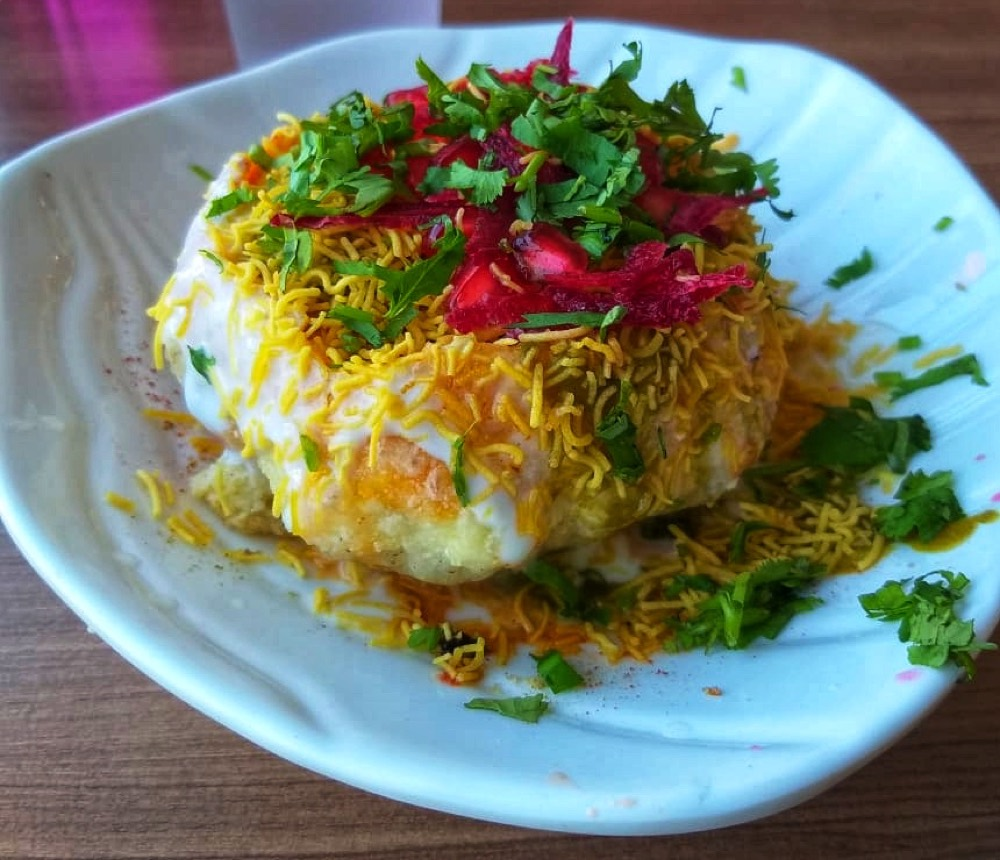

Pyaaz Kachori
flaky fried pastry packed with a dark, heavily spiced onion and besan filling

Contains: gluten
Ingredients
Quantities for 4.
- 250g Maida
- 60ml for the dough, plus 700ml for frying Neutral Oilthe dough fat is what makes the crust flake
- 400g (about 4 medium), finely chopped Onion
- 3 tbsp Besanbinds the filling and stops it going watery
- 2 tsp, crushed Fennel Seeds
- 1 tsp Cumin Seeds
- 2 tsp Coriander Powder
- 1.5 tsp Chilli Powder
- 1/2 tsp Turmeric
- 1 tsp Garam Masala
- 1 tsp Amchur
- 1/4 tsp Asafoetida
- 1 tbsp, grated Gingeroptional
- 2, finely chopped Green Chillioptional
- 1/2 tsp Nigellaoptional
- about 110ml Water
- to taste Salt
Cookware
kadhai, stovetop
Checked against the ingredient list for ten allergens: milk, egg, fish, crustaceans, tree nuts, peanuts, sesame, mustard, soy and gluten. Brands vary, so read the label on anything new to you.
Before you start
- Rub the oil into the flour until a fistful holds its shape when squeezed. If it crumbles apart, add more oil. This test decides whether the kachori flakes or goes hard.
- Make the filling first and cool it completely. Warm filling steams inside the pastry and bursts it in the oil.
- Rest the dough 30 minutes under a damp cloth before rolling.
Method
- Rub the 60ml oil into the maida with 1/2 tsp salt for 3 minutes, then add water a little at a time to make a soft, smooth dough. Cover and rest 30 minutes.Softer than roti dough. A tight dough gives a hard, blistered kachori.
- Heat 3 tbsp oil in a kadhai and crackle the cumin, fennel and nigella, then add the hing.
- Add the chopped onion and cook 12-15 minutes over medium heat until it loses all its water and turns light brown.Keep going until the pan is dry. Wet filling is the single most common reason kachoris split.
- Stir in the ginger, green chilli and besan and roast 4 minutes until the besan smells nutty.
- Add the ground spices, amchur and salt and bhuno 3 more minutes, then spread the filling on a plate to cool.
- Divide the dough into 8, roll each into a ball, and flatten into a 8cm disc thicker at the centre than the edge.
- Place a heaped tablespoon of filling in the middle, gather the edges over it, pinch shut and pull off the excess knot of dough.
- Flatten each stuffed ball gently with your palm into a 7cm disc. Rest them 10 minutes, seam down.Press with the palm, not a rolling pin. A pin tears the pastry and the filling leaks.
- Heat the frying oil to just 140C, low enough that a kachori dropped in takes 8-10 seconds to float. Slide in 3 or 4.
- Fry very slowly, 12-14 minutes, spooning oil over the tops, until they are covered in blisters and pale gold. Raise the heat for the last 2 minutes to crisp them.Low and slow is what makes the layers. Hot oil browns the outside and leaves raw dough inside.
- Drain and serve warm, cracked open with tamarind chutney poured in.
Storage
Keeps 2 days in an airtight tin at room temperature. Re-crisp in a 180C oven for 6-8 minutes. The filling alone freezes for a month.
Nutrition Good estimate
Medium protein: 11 g a serving, 10% of the calories
| Per serving229 g | Per 100 g | |
|---|---|---|
| Calories | 463 kcal | 203 kcal |
| Protein | 11.2 g | 5 g |
| Carbohydrate | 68.9 g | 30 g |
| of which sugars | 6.8 g | 3 g |
| Fibre | 6.9 g | 3 g |
| Fat | 16.4 g | 7 g |
| of which saturated | 1.7 g | 1 g |
| of which unsaturated | 13.5 g | 6 g |
Nearest database match used for amchur, asafoetida, garam masala. Estimated from raw ingredients using USDA FoodData Central.
More like this: Vegan Indian recipes · Vegetarian Indian recipes · Dairy-free Indian recipes · Rajasthani recipes
Times, yields, allergens and nutrition are guidance. Use your own judgement on doneness and on storing. More in About.